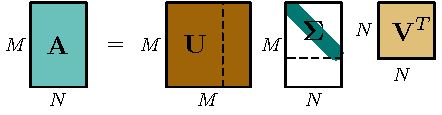
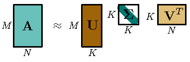

一. 概念
使用机器学习算法处理自然语言，通常需要将自然语言进行数学表示（numerical representations），词向量/词嵌入（word vector/word embedding）是将自然语言数学化的一种方式，它通常使用字典将词映射到向量。
词嵌入可以大致分为两类：基于频率表示（Frequency-based representation）、分布式表示（Distributed Representation）
二. 基于频率表示（Frequency-based representation）
1. 热独表示（one-hot representation）
热独表示，将词视为离散（discrete）的随机变量，通过语料库（Corpus）建立词典（Dictionary，大小为$V$），并给词典中的每个词分配一个index；其将词稀疏表示为长度为$V$的向量，且仅在该词对应的index位置有非零元素1。例如，词典$[\text{who}:0, \text{is}:1, \text{him}:2, \text{her}:3, \text{and}:4]$，him可以表示为$[0,0,1,0,0]$。
将词当做离散（discrete）的随机变量，造成了如下的局限性：
- one-hot向量的维度为词典的大小，对较大的语料库，将面临着严重的维度灾难（The Curse of Dimensionality），导致高维空间数据稀疏化；
维度灾难表现一：1假设维度取值范围在$[0, 1]$之间。
- 若在一维空间中，$N$个样本均匀分布，那么相邻样本在同一维度上的平均距离为$\frac{1}{N}$；
- 若在二维空间中，$N$个样本均匀分布，那么相邻样本在同一维度上的平均距离为$\frac{1}{N^{-1/2}}$；
- 若在p维空间中，$N$个样本均匀分布，相邻样本在同一维度上的平均距离为$\frac{1}{N^{-1/p}}$；
可以看出在样本量固定时，相邻样本在的同维度上平均距离随维度指数上升。这将导致样本稀疏（样本不够），得到过拟合的模型。
维度灾难表现一：假设维度取值范围在$[0, 1]$之间，且样本均匀分布，计算距离中心（原点）的距离为$\frac{1}{2}$的样本占比。
- 若在一维空间中，占比为$\frac{1}{2}$；
- 若在二维空间中，占比为$\frac{1}{4}$；
- 若在p维空间中，占比为$\frac{1}{2^p}$；
当维数较大时，中心区域的样本稀疏，大部分数据对中心原点的距离相似。这种情况下，一些度量相异性的距离指标（如，欧式距离）效果会大大折扣（大部分点有相似距离，无法度量差异），从而导致一些基于这些指标的分类器（如KNN，随着维数的增加，最近邻居的选择实际上是随机的）表现下降。
- 任意两个词间都是孤立的，没有考虑词与词之间，内在的（语义层面的）相似性（similarity）；
1.1 基于热独的文本表示
Count Vector
Count vector，也称Bag of Words（BOW)，是在one-hot词嵌入的基础上，对文本进行数学表示的方式。Counter vector由文本中词的one-hot表示相加得到，其对字典中的词在文本中出现的频次进行记录。例如“who is him and who is her”将表示为$[2, 2, 1, 1, 1]$。
Count Vector面临以下问题：维度灾难和语意鸿沟、没有考虑句中词的顺序（不同句子，可能得到相同的词向量）、（没有实际意义的）停词有较高的出现频率（重要性）。
TF-IDF
TF-IDF解决了上述，没有实际意义的停词，却有较高的出现频率（重要性）的问题。
- 词频（term frequency，TF），用来衡量词在文档中的重要性：TF =（该词在该文档中出现的频率）/（文档中总词数）。
- 逆文档频率（inverse document frequency，IDF），用来衡量词（在所有文档中）的常见程度。若某词出现在所有文档中，对特定文档的重要性就较低：IDF = log(文档总数/带有该词*的文档数 + 1(optional)）。
- TF-IDF = TF * IDF。
假设语料库为[“who is him”, “who is her”]，TF(is, Document1）= 1/3，IDF(is) = log_e(2/2) = 0，停词is的TF-IDF：TF-IDF(is, Document1)=0；同理TF-IDF(who, Document1) = 0，TF-IDF(him, Document1) = 0.3，则“who is him”可表示为$[0, 0, 0.3, 0, 0]$
N-gram
N-gram一定程度上改善了Count vector中没有考虑词序的问题。N-gram通过在词典中增加N-gram词组，获取局部的上下文信息（但是词表的维度也会急剧增大）。
例如增加bigram词组，语料库[“who is him”, “who is her”]对应的词典由$[\text{who}:0, \text{is}:1, \text{him}:2, \text{her}:3]$，变为[$[\text{who}:0, \text{is}:1, \text{him}:2, \text{her}:3, \text{who is}:4, \text{is her}:5, \text{is him}:6]$，“who is him”可以表示为[1, 1, 1, 1, 1, 0]。
三. 分布式表示（Distributed Representation）
分布式表示将词嵌入到另一个空间，表示成定长的稠密向量，且这些向量间能够存在语义上的联系，克服one-hot表示的缺点。
1. 共现矩阵（Co-occurrence matrix）
共现矩阵（Co-occurrence matrix）是指定窗口大小（[—,—,$\star$,—,—]，窗口大小为5），通过统计窗口内的单词共现次数，构成的矩阵，其大小为$V \times V$（$V$为语料词典大小）。显然地，共现矩阵也会存在维数过大的问题，可以采取矩阵分解（如，SVD）等手段来进行降维。
1.1 Singular Value Decomposition (SVD)
SVD，奇异值矩阵分解是指，任何矩阵$\boldsymbol{A}$都可以做如下分解：$$ \boldsymbol{A}_{M \times N}=\boldsymbol{U}_{M \times M} \boldsymbol{S}_{M \times N} \boldsymbol{V}_{N \times N}^{T} $$
由下图可知，$\boldsymbol{U}$和$\boldsymbol{V}$是正交矩阵，即$\boldsymbol{U}\boldsymbol{U}^T = \boldsymbol{I}$，且分别称为左、右奇异值向量（left、right singular vectors），$\boldsymbol{S}$仅对角线元素有非零值（奇异值，Singular Value，且从大到小排列）。

选择奇异值中最大的$k$个，并取其对应的奇异值向量，如下图所示。

我们称$\hat{\boldsymbol{A}}_{M \times N}=\boldsymbol{U}_{M \times k} \boldsymbol{S}_{k \times k} \boldsymbol{V}_{k \times N}^{T}$为$\boldsymbol{A}$在Frobenius范数（Frobenius norm，$ \|\boldsymbol{A}\|_{F}^{2}:=\sum_{i, j}\left|\boldsymbol{A}_{i, j}\right|^{2} $）上最好的k阶近似，即$ \|\boldsymbol{A}- \underbrace{\boldsymbol{A}\boldsymbol{C}\boldsymbol{R}}_{\hat{\boldsymbol{A}}}\|_{F}^{2} $最小（其中，$\boldsymbol{C}_{N \times k}$、$\boldsymbol{R}_{k \times N}$分别为压缩、还原矩阵，且$\boldsymbol{C}_{N \times k} = \boldsymbol{V}_{N \times k}$、$\boldsymbol{R}_{k \times N}^T = \boldsymbol{V}_{k \times N}$）。
在PCA中，通常用$\boldsymbol{A}\boldsymbol{C}$，即右奇异矩阵$\boldsymbol{A}\boldsymbol{V}_{N \times k}$来代表对列（特征）进行压缩（或左奇异矩阵$\boldsymbol{U}_{k \times m}^T\boldsymbol{A}$对行(数据)，进行压缩）。
1.2 共现矩阵降维
共现矩阵基于上述的SVD算法降低维度（本质可视为矩阵分解），一般用$\boldsymbol{U}_{k \times m}$或$\boldsymbol{A}\boldsymbol{V}_{N \times k}$，作为压缩后的词向量矩阵。
基于SVD，得到了稠密词向量，相比one-hot表示有一定提升：
- 降低了词向量的维度；
- 保留了词之间的语义关系，例如，“man”和“women”往往比“man”和“apple”在向量空间中更接近。
但依旧有不足之处：
- 分解共现矩阵，即SVD是一个计算复杂度高；
- 一个词对应单一的词向量，无法解决一词多义问题；
- 不方便处理新的语料，若加入新语料，需要重新进行SVD。
2. 神经网络语言模型（NNLM）
如上一篇博文所描述的，通过训练语言模型任务（NNLM），可以得到副产物：词向量矩阵$C$。但Softmax的计算复杂度为$O(V)$，计算量大，导致训练速度过慢。
3. Word2Vec
为解决NNLM训练速度慢的问题，Tomas Mikolov的论文[6]、[7]在NNLM的基础上上，对运算效率进行了优化，提出了Word2Vec模型。
接下文：Word2Vec模型